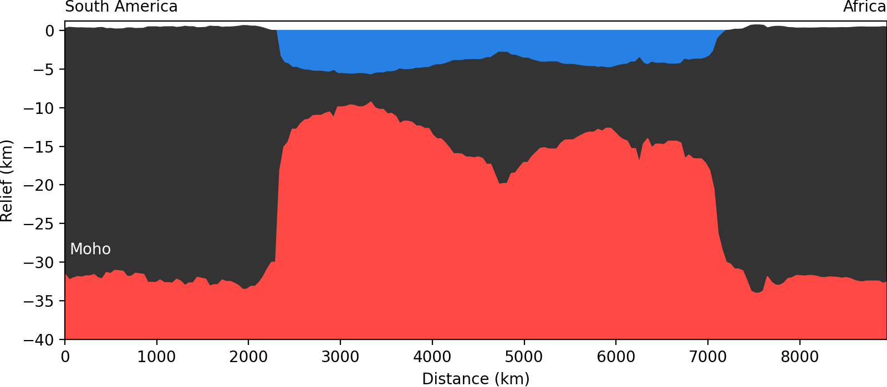
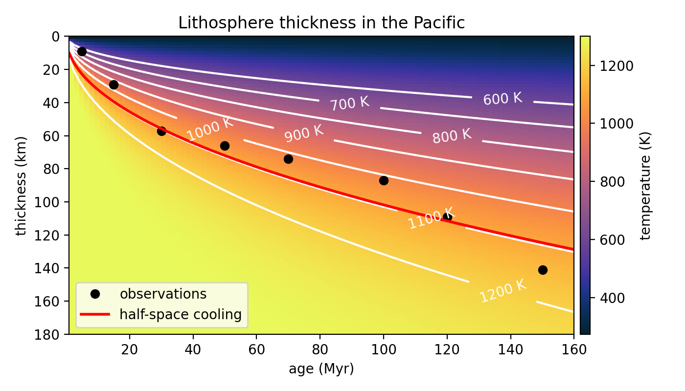

ENVS398 Advanced Geodynamics | Part 2 - The Lithosphere
Oceanic lithosphere
Leonardo Uieda uieda@liverpool.ac.uk Herdman Building - A2.06
Previously
on ENVS398
The oceans are close to isostatic equilibrium

Mid-ocean ridges aren't compensated by
crustal roots (Airy isostasy)

This model does not match plate tectonics (plates are created at the ridges).
Global heat flow
Most heat is lost through the oceanic plates

Global heat flow compilation by Lucazeau (2019).
Young lithosphere is warmer than older lithosphere
Conduction models
- Convection of the mantle is controlled by thin thermal boundary layers.
- Surface boundary layer (lithosphere) is the greatest temperature gradient.
- Lithosphere cools by vertical conduction away from the ridge.
- Spreading and cooling are symmetric around the ridge axis.
- As it cools it becomes denser and the sea-floor depth increases.
- Ultimately initiates subduction (driving convective flow).
Reading
For an detailed discussion and derivation of equations, see:
- Chapter 7 section 5 of "The Solid Earth" by C. M. R. Fowler.
- Chapter 4 sections 15-17 of "Geodynamics" by D. Turcotte and G. Schubert.
Conductive cooling:
Half-space model (HSM)
Model setup

- Lithosphere is defined by an isotherm.
- Model starts with asthenosphere temperature at the ridge.
- Temperature at the surface is held at $T_0$.
- Cooling by vertical conduction only as plate moves away from ridge.
- No internal heat generation.
Switching to time

- Assume that spreading rate is constant $u = \frac{x}{t}$
- From 2D to 1D (vertical) varying with time.
- Diffusion equation: $ \dfrac{\partial^2 T}{\partial z^2} = \dfrac{1}{\alpha} \dfrac{\partial T}{\partial t} $
- $\alpha$ is the thermal diffusivity*.
*Note: the Geodynamics book uses $\kappa$ for thermal diffusivity.
Boundary conditions
- Profile is at asthenosphere temperature $T=T_a$ at $t=0$ (ridge).
- The top of the lithosphere $z=0$ is at a constant temperature $T = T_0$.
Solution
$ T(t) = T_0 + (T_a - T_0) \text{erf} \left( \dfrac{z}{2\sqrt{\alpha t}} \right) $
$ \text{erf}(z) = \dfrac{2}{\sqrt{\pi}} \int\limits_0^z e^{-n^2} dn $ is the error function
$ T(x) = T_0 + (T_a - T_0) \text{erf} \left( \dfrac{z}{2\sqrt{\alpha \frac{x}{u}}} \right) $
See "Geodynamics" sections 4.15 and 4.16 for a derivation.
Solution

Assuming:
- $T_0 = 273\ K$
- $T_a = 1300\ K$
- $\alpha = 1\ mm^2/s$
Comparison with observations
Lithospheric thickness
- Can be measured with seismic methods.
- For example: receiver functions, surface wave dispersion, tomography.
- We can predict thickness with our model under some assumptions.
The data
Lithospheric thickness from inversion of Rayleigh wave dispersion data
(Leeds et al., 1974).

Lithospheric thickness for half-space cooling
- Based on the temperature.
- Here we'll use: $\dfrac{T - T_0}{T_a - T_0} = 0.8$
- This is somewhat arbitrary.
- Substitute in solution: $\text{erf}\left(\dfrac{z}{2\sqrt{\alpha t}}\right) = 0.8$
- Taking the inverse: $\dfrac{z}{2\sqrt{\alpha t}} = \text{erf}^{-1}(0.8)$
- $z_{litho} = \text{erf}^{-1}(0.8) 2 \sqrt{\alpha t}$
See "Geodynamics" section 4.15 for a derivation.
Half-space model thickness predictions
Assuming $T_a = 1300\ K$, $T_0 = 273\ K$, and $\alpha = 1\ \frac{mm^2}{s}$
- Cannot fit all observations.
- No single isotherm fits young and old lithosphere simultaneously.
Heat flow
- Can be measured in ocean bottom drilling operations
- Difficult to remove effects of hydrothermal convection in younger lithosphere.
- Data compilations exist that try to control for these effects.
The data
Heat flow in the Atlantic and Pacific Oceans compiled from
Sclater et al. (1976),
Davis et al. (1984),
and Lister et al. (1990).
Heat flow for half-space cooling
- From Fourier's law the heat flow (or flux) is: $q = -k \dfrac{\partial T}{\partial z}$
- $k$ is the thermal conductivity
- We want to calculate $q = q_0$ at the surface $z=0$
- Substituting for the half-space model*: $q_0 = k \dfrac{T_a - T_0}{\sqrt{\pi \alpha t}}$
*See "Geodynamics" section 4.15 for a derivation. (The sign here is flipped because most data have positive flux upward instead of downward).
Half-space model heat flow predictions
- Predictions match younger lithosphere well.
- Model predictions too small for older lithosphere.
- Half-space model cools indefinitely ($\lim_{t \to \infty} = T_0$)
- In reality there is probably basal heating from convection.
Conductive cooling:
Plate model (PM)
Source code
Python code for making the figures shown in this lecture are available in a Jupyter notebook:
References
- Chapter 7 section 5: Oceanic heat flow, "The Solid Earth" by C. M. R. Fowler.
- Chapter 4 sections 16 and 17: Cooling of the oceanic lithosphere, "Geodynamics" by Donald Turcotte and Gerald Schubert.
"ENVS398 Advanced Geodynamics" by Leonardo Uieda is licensed under a Creative Commons Attribution 4.0 International License.
Source code: leouieda/envs398